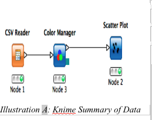
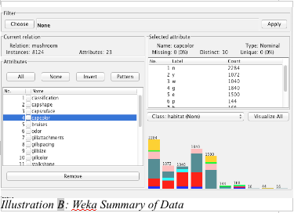
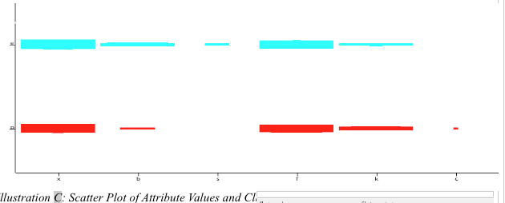
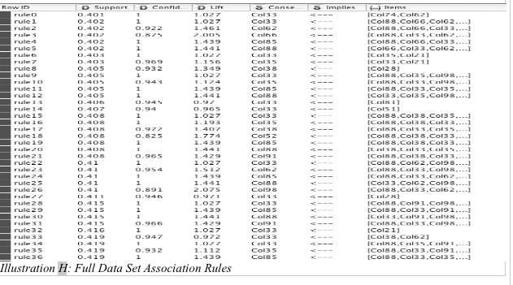
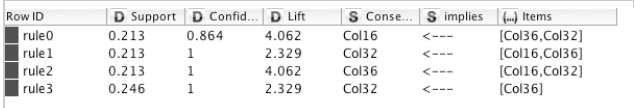
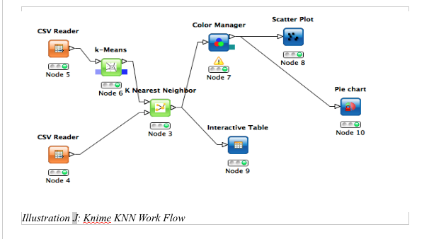
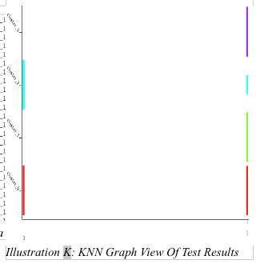
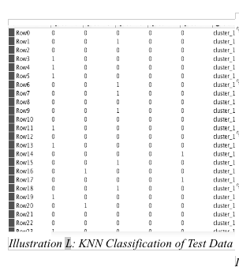

Data Mining Portfolio
Application: The Classic Mushroom Dataset
Mushroom Data Exploration
The data process behind the mushroom data presented results that were unexpected or rather difficult to detect with just looking at the data. In order to approach the task of mining the data, I had to become familiar with the data so I could at least understand the results of the data mining algorithms implemented by Knime and Weka.
Understanding the Data
To avoid confusion of trying to figure out the data on my own, I studied the meta data that was supplied with the data set. In the meta data, it was provided to me that there was 8124 cases (rows), 22 attributes, 1 classification, and a set of rules that were previously discovered with the data. The rules may seem irrelevant as since the whole goal is to find my own association rules, but these rules would provide some comparison to my own results. After reading through the meta data, I explored the actual data to get a feel of what I would be processing, to see if any patterns stood out, and how I could possibly manipulate the data to initiate better results, which led me to my first steps in the data mining process.
Obtaining Data Sets
After looking at the data, I noticed that most attributes had more than 2 possible values, which could make the data harder to explore since values are not represent numerically. My first reaction and my first mistake was to change each attribute value into its own attribute. This, however, change my attribute list from 22 to 121 attributes. Changing to such a large number of attributes quickly overwhelmed my capacity to be able to understand the data by looking at and even maybe the possibility of understanding my results. I then took a stance of how can the attributes or the data in general be reduced in order to provide faster and easier results without compromising the integrity of the data. I decided to separate the data into two data sets by the classification if they were poisonous or edible. This still produced a large amount of results and attributes, meaning I would need to focus on the attributes rather than splitting up the data. Thus, I returned back to the original data set. My goal with returning to the original data set was to use Knime and Weka to help me just explore the data more without manipulating anything. With Weka, the preprocessing state gave me similar information to the meta data data however it provided me with the a count of each attribute value in relation to the presence in the data. This was interesting information, but not exactly helpful in attribute reduction. In Knime, I colored the data and directed the input to a scatter plot, that way I could visualize the data and maybe find my own attributes to ignore or combine. This method, surprisingly, provided me with the most useful information and a new direction to mine my data with. Once Knime had built all the scatter plots, I easily traversed through each attribute in relation to the class labels and could see what attribute values were shared between both the poisonous and edible classes as well as what values were unique to each class label. Taking note of these relationships , I determined that the attributes that are shared relatively equally among both class labels would most likely not be beneficial or necessarily important in the actual data mining process. Thus, I narrowed down the attributes to what attributes were unique to each classification and what attributes were barely shared between the classifications, which cut down the attribute list down to 15 attributes. With these new attributes, I parsed the data to include only these attributes for my future data mining process (Illustrations A-C).



Data Mining
To begin the data mining process, I first decided to look to see if any possible “groups/clusters” could be obtained from the data. Using Knime, I applied the Kmeans algorithm to determine if any clusters were present. After trying a few different variable values for K clusters (2,3,4,6), 4 clusters seemed to produce more interesting results in which two clusters were clearly edible mushrooms, one cluster was clearly poisonous, and the last cluster was shared between the two classifiers. This could be the result of anomalies in the data set or just the natural occurrence of mushrooms in the wild. The thought occurred to remove the possible anomalies in the data, but due to my lack of knowledge of mushrooms and not being able to confidently remove data I decided against removing them just to make sure I did not harm the integrity of the data. That being said, I wanted to make sure that my clusters could be further supported by Weka and the implementation of another clustering algorithm: Fuzzy C. With Weka, very similar results were given except for having one mixed classifier group, it gave me 2 groups with poisonous clusters. However, the Fuzzy-C clustering gave completely different results in which it gave me one cluster for edible mushrooms, one cluster for poisonous mushrooms, and 2 clusters of mixed mushrooms. However, considering the results of Kmeans through Weka and Knime I could say that I had some what of a formidable foundation in clusters allowing me to explore possible association rules (Illustrations D-F).
Once again with the use of Knime, I wanted to use the association rule learner to help bring forth any association in the data. However, I was skeptical that my reduced data may miss results that would be present in the original data. To solve this issue, I ran the association rule learner on the original data and the newly condensed data. The association results on the old data produce 136 rules, which could be considered to be over fitting of the data as well as no longer useful. However, the condensed data produced only 4 association rules of which that focused on odor, gill color, and veil color. These association rules were different from the ones provided in the meta data. This could be due to the fact that different thresholds were used, the use of condensed data, or even Knime limitations (Illustrations G-I).


Moving away from association, I went back to the k-means clustering to develop a classifier with KNN (Illustrations J-L). In order to do this though, I had to split the data into training (even number lines) and testing (odd number lines) data sets. After feeding the training data through the k-means cluster and into the KNN, I was able to apply the test data into the KNN. The results were slightly different from expected but none the less it gave me similar results for the clusters. The results did vary as two groups in the resulting data had mixed values meaning that some instances of the testing data was missed classified. This could have been due to the fact that the testing data did not have enough variety to form a better classifier (Illustrations D-L).



Final Thoughts
After looking at the data and attempting to mine it. I did find interesting relationships and possible “groups” among the data. However, the confidence and support of these groups and relations may not be enough to safely make a rule of thumb when it comes to mushroom safety. With further analysis, I would focus a little more on the KNN classifier since the training data can affect the out come greatly. All together, just don't any mushroom in the wild.